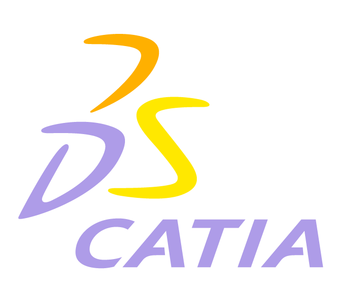
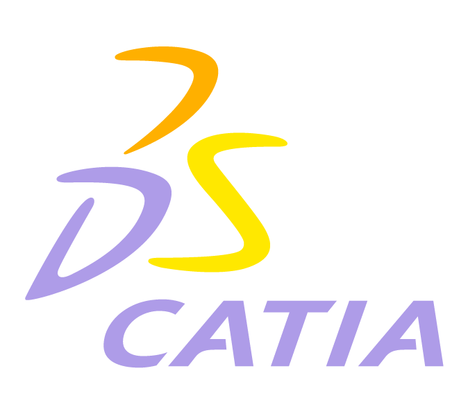
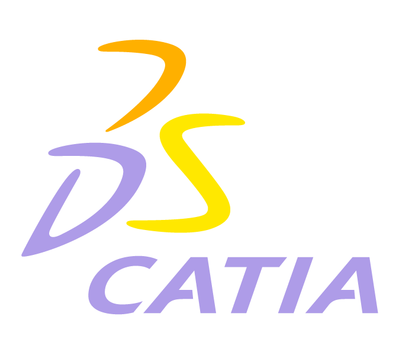

Technical Skills
Programming
Graphic

Platforms

CAD
 

I majored in Industrial engineering at Purdue University, where I learned how to use various software tools and programming languages. Since optimization is very emphasized in Industrial engineering, my major came in handy when my first task as web administrator was to optimize the website so that users could use it comfortably. Web development is one of my biggest passions, so I am continuously learning new languages and tools to apply in my day-to-day work. In these recent times, I have become addicted to online courses and forums.
I have been very curious about computers and its parts since I was young, to the point that I disassembled my dad’s laptop when I was a kid to see what was inside. I built my first computer when I was 16 after carefully choosing each part, based on both performance and my family’s budget. My love for computers led me to apply for my first position as computer consultant at Purdue University, where I had a blast helping people with their computers while also learning crucial customer service and communication skills in the process.
My work at a regional newspaper company introduced me to the world of journalistic editing and design, where I have been able to exercise my creative side and my organization skills. After all, the news industry is a fast-paced environment where you have to deliver a newspaper every single day. I use InDesign to edit the newspaper into a publishable format. I also use graphic tools like Illustrator and Photoshop to design charts and figures for the newspaper. My designing skills have also benefited the development of the website with custom-made icons and banners.
Programming
Graphic
Platforms
CAD
